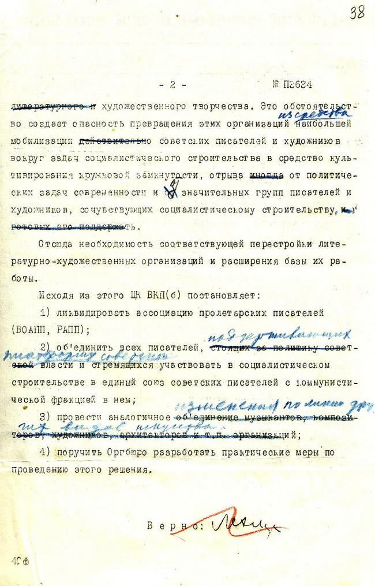

In his later works, Malevich writes that the rival to the artist is the state. While he denies religion and science –because they belong to the field of consciousness– he mentions that the state appeals to the subconscious: “Any state is an apparatus by which the nervous system of the people living in it is regulated.”22
Suppose, a person outside a state institution attacks authorities – pointing at their bureaucratism and corruption– and says that one should be independent and assertive in his dealings with them. But, by being in an official’s office, he suddenly becomes compliant. When this is seen as mere cowardice, it is of course a superficial and naive emotional view. These reincarnations can only be explained by the very structure of social relations which surround the subject since childhood and therefore sink to the level of more unconscious reflexes. This is precisely why any institution of power scrupulously guards its formational order (one must answer only ‘yes’ or ‘no’, submit documents in the prescribed order, stick to the prescribed procedure of registration, come on strictly appointed days, and so on). This is also why it is difficult for the critical subject himself to accept other rules of the game, because despite the freedom of his reflection, there is still a certain automatism of the practical sphere that he has no control over.
It is in this area of social action that subjects for the most part act as beings not knowing what they are doing. This automatism of social actions successfully correlates with the automatisms of our body. Theoretically, one can imagine how to walk, but if we thought about it in the process of walking itself, then our movements in space would be very difficult. The same is true with regard to speech activity. If we thought every time how to construct a sentence grammatically correctly, and did not do it automatically, then we would speak our native language as badly as a foreign one.
The state is focused on this automation of consciousness. On its systematic formation in ‘the right direction’, through its management of the environment, basis 23
By a way of even greater disintegration they wanted to achieve nothingness, a pure form of contemplation. But with its totality, the avant-garde turned the artist – instead of being contemplative –into a demiurge and ruler.
On 23rd April 1932 the dissolution of the artistic groups took place by decision of the Central Committee. This was not only to put an end to factional struggles on the art and culture front, it was also important to subject all Soviet practice to Party leadership and symbolically establish Joseph Stalin’s title as the country’s chief artist. “The dream of the avant-garde to bring all art under direct Party control for the purpose of life-building, i.e. ‘building socialism in one country’ as a true and complete work of collective art, thus came true, although the author of this idea was not Rodchenko or Mayakovsky, but Stalin, who inherited by right of full political power their artistic project.” writes Boris Groys.24

Figure 7. Ordinance of Central Committee of dissolution of the artistic groups, 1932.
Thus, the evolution of the discourse of the creation of a new world with total power over the world– which had become dominant in the country– led to the demise of the avant-garde itself. In the end, it became only one of the few tools for imposing a new ideology. All of the artists who accompanied the revolution in the twenties suddenly became ‘policemen’ as the embodiment of the bureaucratic relation between poetic and political ideology. Groys provides Dmitri Prigov’s 25 analogy between the poet and the policeman. The poet recognizes his double in the policeman in the poetic impulse as a manifestation of the will of power and identifies or plays with the possibility of identification –the power of the poetic word and the power of the state. Prigov sees the figure of Khlebnikov merging with that of the policeman. “This inversion of the usual rhetoric behind which is the Stalinist experience of turning yesterday’s anarchists, poets, and revolutionaries into policemen of the new world” 26
Thus, the Communist Party of the USSR was officially regarded as the avant-garde of all progressive humanity.
Figure 8. Zhaishylyk Akhanov's Communist Pary Card
My grandfather’s Communist Party card is pictured above. According to my grandmother’s story, the best workers, who stood out from the rest, were selected for the Communist Party by their diligence and loyalty. It is interesting to note the language my grandmother uses when talking about this, that this party includes only the best of the best. I don’t doubt my grandfather’s integrity in the slightest. Although I don’t remember him, I am sure that as a doctor he helped many people and contributed to society and deserves the orders and commendations that he was granted. But, it is this totality of the system that slips through here. Because the Communist Party of the USSR was officially regarded as the vanguard of all progressive humanity, a successful party career was inevitably equated with the individual’s own anthropological development. Because the hegemony of the Communist Party in power is the hegemony of objectively more advanced people.